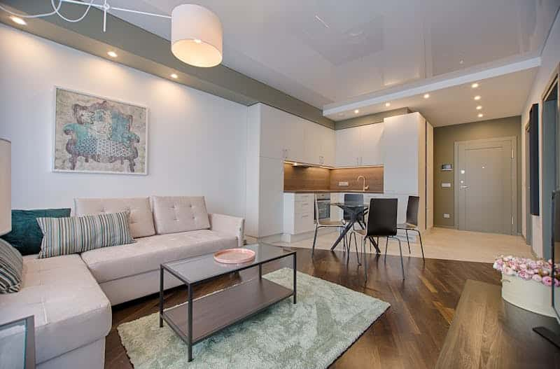
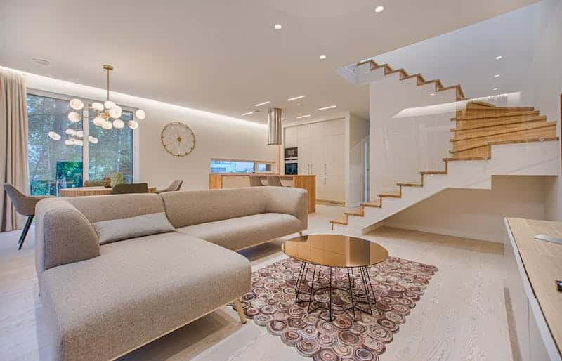

Pourquoi l’immobilier neuf est-il synonyme de zéro travaux ?
L’un des arguments les plus décisifs en faveur de l’immobilier neuf est souvent sous-estimé : l’absence totale de travaux à l’entrée dans les lieux et pendant de nombreuses années. Alors que l’ancien impose quasi systématiquement une enveloppe travaux — rafraîchissement, mise aux normes électriques, isolation thermique, réfection de la plomberie — le logement neuf est livré clé en main, conforme aux dernières normes, prêt à être occupé ou loué immédiatement.
C’est un avantage décisif dans un contexte où le coût des travaux de rénovation a bondi de plus de 30 % depuis 2020, sous l’effet de la hausse des matières premières et de la main-d’œuvre. En 2026, rénover un appartement ancien peut facilement coûter entre 800 et 1 500 € par m², sans compter les délais, les imprévus et les périodes d’inoccupation qui pèsent sur la rentabilité locative.
À l’inverse, un logement neuf intègre dès la construction les standards RE2020 en matière d’isolation thermique et phonique, de ventilation et d’équipements. Résultat : des charges réduites pour le locataire, une attractivité locative renforcée et une valeur patrimoniale préservée sur le long terme.

Les garanties légales qui protègent votre bien neuf
Au-delà de l’absence de travaux immédiate, l’achat dans le neuf s’accompagne d’un bouclier juridique unique qui n’existe pas dans l’ancien. Trois garanties légales couvrent votre bien pendant une durée allant jusqu’à 10 ans :
La garantie de parfait achèvement (1 an)
Durant la première année suivant la livraison, le constructeur est tenu de corriger tous les désordres signalés, quelle que soit leur nature. Fissure, défaut d’étanchéité, malfaçon sur un équipement : tout est pris en charge sans frais pour le propriétaire.
La garantie biennale (2 ans)
Elle couvre pendant deux ans les éléments dissociables du bâtiment : volets, robinetterie, radiateurs, portes intérieures, revêtements… En cas de dysfonctionnement, le remplacement est à la charge du constructeur.
La garantie décennale (10 ans)
La plus puissante : elle protège contre tous les dommages qui compromettent la solidité du bâtiment ou le rendent impropre à sa destination pendant dix ans. Infiltrations, problèmes de structure, défauts d’isolation majeurs — le constructeur en répond sur une décennie entière.
- 0 € de travaux imprévus pendant la période de garantie
- Aucun risque de vice caché contrairement à l’immobilier ancien
- Locataires rassurés par un logement aux normes, sans pannes récurrentes
- Frais d’entretien réduits : pas de ravalement, pas de mise aux normes électriques
Exemple concret : combien économisez-vous par rapport à l’ancien ?
Pour mesurer l’avantage financier réel de l’immobilier neuf, rien de mieux qu’une comparaison chiffrée. Prenons l’exemple d’un appartement de 60 m² dans une ville dynamique comme Toulouse.
Dans l’ancien, un bien à rénover s’achète souvent moins cher à l’achat, mais les travaux peuvent rapidement dépasser 15 000 à 30 000 € : réfection de la plomberie, mise aux normes électriques, isolation thermique, remplacement du système de chauffage, ravalement… Sans compter les imprévus, qui allongent les délais et font exploser les budgets.
Dans le neuf, ce même appartement respecte d’emblée la RE 2020 (réglementation environnementale en vigueur), est livré avec cuisine équipée ou prête à poser, parquet, carrelage, peintures et volets roulants selon les programmes. Résultat : zéro travaux à prévoir avant d’emménager ou de mettre le bien en location.

Sur 5 ans, un investisseur dans l’immobilier neuf économise en moyenne 10 000 à 25 000 € de travaux et de charges imprévues par rapport à un bien ancien équivalent. Ajoutez à cela les économies sur les factures d’énergie grâce à une meilleure isolation, et le différentiel devient encore plus significatif.
Sans oublier l’aspect locatif : un logement neuf, bien entretenu dès le départ, se loue plus facilement, attire des locataires de qualité et limite le turnover — autant d’éléments qui sécurisent votre rendement sur le long terme.
Pourquoi choisir Solution Neuf pour votre projet immobilier ?
Chez Solution Neuf, nous sommes spécialisés dans la vente d’immobilier neuf et nous accompagnons nos clients à chaque étape de leur projet : de la sélection du programme jusqu’à la remise des clés.
Notre équipe connaît parfaitement les programmes neufs disponibles en Occitanie et dans toute la France. Nous sélectionnons pour vous les résidences qui offrent le meilleur rapport qualité-prix, les meilleures garanties constructeur et les localisations les plus porteuses pour la location ou la revente.
En choisissant un bien neuf avec Solution Neuf, vous bénéficiez :
- D’un accompagnement personnalisé par des experts en immobilier neuf
- D’un accès privilégié à un large catalogue de programmes partout en France
- D’un conseil patrimonial adapté à votre situation (fiscalité, financement, rendement locatif)
- D’une tranquillité totale grâce aux garanties légales et à la qualité des constructions sélectionnées
Investir dans l’immobilier neuf, c’est choisir la sérénité. C’est emménager — ou louer — sans délai, sans chantier et sans mauvaise surprise. C’est construire un patrimoine solide, économe en énergie et conforme aux standards les plus exigeants du marché immobilier actuel.
Prêt à franchir le pas ? Contactez dès aujourd’hui l’équipe Solution Neuf pour découvrir les programmes neufs disponibles près de chez vous et démarrer votre projet sereinement.
Publié le 03/04/2026 · Mis à jour le 03/04/2026